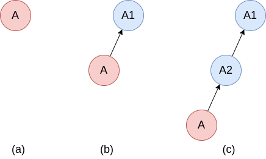
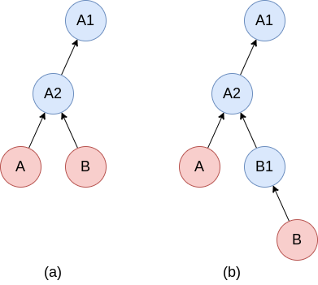

Transactions#
The Transaction concept comes from SOFT. It allows to easily manage arbitrary long series of immutable (frozen) instances, while ensuring provenance. Conceptually, it shares many similarities with git.
A basic usage for transactions is to take snapshots of the current state of your system.
This is shown in Figure 1, where we assume that the instance A (which, e.g., could be a collection) describes the state of your system.
We call an instance a transaction after we have taken a snapshot of it, i.e. when it contains a reference to an immutable previous (“parent”) instance.

Figure 1: Creating a transaction by taking snapshots.
(a) initial state of your system described by instance A.
(b) creating a transaction by taking a snapshot of A at time t1.
The snapshot, A1, stores an immutable (frozen) copy of A from the exact moment t1 the snapshot was taken.
(c) After another snapshot was taken at a later time t2.
Blue circles represent immutable instances, red circles represent mutable instances, while arrows relate an instance to its (frozen) parent instance.
It is straight forward to create such snapshots using the Python and C APIs. In Python, the steps in Figure 1 can be produced by the following code:
A = dlite.get_instance("A") # Initial state (Fig. 1a)
A.snapshot() # Make snapshot at time=t1 (Fig. 1b)
# A is evolved...
A.snapshot() # Make snapshot at time=t2 (Fig. 1c)
The corresponding code in C would be:
DLiteInstance *A = dlite_instance_get("A"); // Initial state (Fig. 1a)
dlite_instance_snapshot(A); // Make snapshot at time=t1 (Fig. 1b)
// A is evolved...
dlite_instance_snapshot(A); // Make snapshot at time=t2 (Fig. 1c)
The snapshots can be accessed using dlite_instance_get_snapshot().
For instance, accessing snapshot A2 and creating a new branch from it can be achieved by the following four lines of Python code:
A2 = A.get_snapshot() # Access the most recent snapshot of A
B = A2.copy() # Create a mutable copy of A2
B.set_parent(A2) # Make B a transaction with A2 as parent. Shown in Fig. 2a.
B.shapshot() # Make a snapshop of B. Shown in Fig. 2b.
The corresponding C code is:
// Access the most recent snapshot of instance A.
// Note that A2 is a borrowed reference to the snapshot and should not be
// dereferenced with dlite_instance_decref().
const DLiteInstance *A2 = dlite_instance_get_snapshot(A, 1);
// Create a mutable copy of A2.
// Note that B is a new reference. You should call dlite_instance_decref() when you
// are done with it.
DLiteInstance *B = dlite_instance_copy(A2);
// Make B a transaction with A2 as parent. Shown in Fig. 2a.
dlite_instance_set_parent(B, A2);
// Make a snapshop of B. Shown in Fig. 2b.
dlite_instance_snapshot(B);
The result of these commands are shown in Figure 2.

Figure 2: Creating a new branch, from a snapshot of a transaction.
(a) Create a copy (B) of latest snapshot of transaction A.
(b) Take a snapshot of B.
Transaction parent and immutability#
All transactions start as a root instance with no parent instance. All other instances in a transaction has exactly one parent instance. All instances in a transaction that serve as a parent are immutable (that is, all instances except the leaves (the latest)). Non-root transaction instances store a SHA-3 hash of their parent together with the parent UUID. This makes it possible to ensure that any of the ancestors of a transaction have not been changed - providing provenance.
A transaction can be verified with the verify_transaction() method in Python and dlite_instance_verify_transaction() in C.
Memory management#
The number of snapshots can potentially be very large, hence it is important to be able to store them to disk in order to save memory.
To support this, DLite implements the pull_snapshot() and push_snapshot() methods (dlite_instance_pull_snapshot() and dlite_instance_push_snapshot() in C).
Calling inst.push_snapshot(storage, n) will push all ancestors of snapshot n of instance inst from memory to storage storage, where n=0 corresponds to inst, n=1 to the parent of inst, etc… Hence, this will release memory.
Calling inst.pull_snapshot(storage, n) will pull snapshot n of instance inst as well as all its descendants from storage storage to memory. Hence, this is similar to inst.get_snapshot(n), except that an explicit storage is used.
Note that not all storages can be used with these functions, since whether an instance is a transactions or not, is not described by its metadata and hence requires special support by the storage plugin.